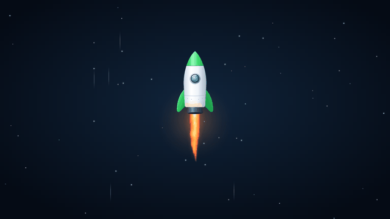

Free · Built on Debian
Your PC, like a console.
Plug in a USB stick, switch on, and you're at a Home screen made for a controller. Steam, Windows programs, Discord, Spotify and thousands of other apps are a button press away.

Write it to a stick
LaunchOS Flasher for Windows downloads the newest version, checks it and puts it on any USB stick of 8 GB or more.
Start your PC from it
Pick the stick in your PC's boot menu. Windows stays exactly as it was: LaunchOS never touches your drives unless you ask.
Play
Sign in to Steam, add your apps in Setup, and everything you do is saved on the stick for next time.
Everything here is free
A whole system, built for the couch
Every screen works with a controller, a keyboard or a mouse. Nothing is locked, trial-limited or ad-supported.
Games and apps
Steam
With Proton, so most Windows games in your library just run. Steam installs itself from Valve the first time you open it.
Windows programs
Open an .exe or .msi from a folder or USB drive and it runs with Wine. No setup.
Store
Thousands of free apps from Flathub, including Discord, Spotify, VLC, OBS, Heroic and Prism Launcher.
Apps pick up where you left off
Go Home and the app keeps running. Resume, restart or end it from its tile, like on a console.
Everyday tools
Files
Browse, copy, move and rename. Format and safely eject USB drives. View pictures and play music and video.
Browser
A light web browser that opens next to your game without closing it.
Terminal
A full Linux terminal for when you want one. Set a password in Settings to use sudo.
On-screen keyboard
Type Wi-Fi passwords, searches and file names with the controller. A real keyboard works too.
The system
Fast start
A rocket lifts off while LaunchOS starts, and the sign-in screen is up in about 20 seconds.
Keeps your stuff
Settings, sign-ins, downloads and games are saved on the USB stick, or on the drive you install to.
Updates
LaunchOS, your apps and the system update from Settings, in small downloads.
Built on Debian 13
A stable base with security updates. Works on BIOS and UEFI PCs.
Wallpapers
Seven painted backgrounds, from a lift-off at dawn to an aurora over the mountains, plus your own highlight color.
Sign-in and lock
An optional password. Lock the screen and your game waits behind it.
LaunchOS Pro
A few extras, and a way to say thanks
Pro is a one-time $5 unlock for people who want a bit more from their games and their Home screen. It's built into LaunchOS: enter a key in Settings and the extras switch on. The free edition stays complete; nothing in it will ever move behind Pro.
- Up to 5 of your PCs
- Every future version included
- Works offline once unlocked
Pro goes on sale soon.
Gaming mode
Most PCs save power by slowing the processor down between bursts of work. That's fine for a web page, but in a game it shows up as stutter and uneven frame times. Gaming mode switches all of that off while you play, and switches it back the moment you stop.
- Full-speed processor: the performance setting and the highest energy preference, on every core.
- Your game comes first: the game and everything it starts get priority over background tasks.
- Fewer slowdowns in Windows games: some of them keep doing something (a “split lock”) that Linux normally punishes with a deliberate pause; gaming mode lifts that penalty while they run.
- Automatic: it starts when you open a game from Home and undoes every change when the game closes. Nothing stays changed after a restart.
It makes your PC run at its best, not beyond it: a slow graphics card stays a slow graphics card.
| Normal | Gaming mode | |
|---|---|---|
| Processor speed | Power saving | Full speed |
| Game priority | Same as others | First |
| Split-lock penalty | On | Off |
| When | Always | Only while you play |
FPS counter
See how smoothly a game really runs. Turn it on in Settings → Gaming and pick how much it shows:
- Just the FPS in a corner, small enough to leave on.
- Detailed: FPS plus processor, graphics and memory use, for when you're tuning settings.
It works in Steam games and Windows programs.
Live backgrounds
Four backgrounds that move behind your Home screen, drawn live by your graphics card rather than played from a video:
- Warp speed: stars streaming past.
- Nebula drift: clouds of color slowly turning.
- Living aurora: northern lights rippling over the mountains.
- Launch day: the LaunchOS rocket on its way up.
They pause while a game is running, so they never cost you frames.
Color themes
Midnight blue is the standard look. Pro adds five more that recolor every screen, from Home and Settings to Files and the Store, and work with any highlight color.
- Carbon and Pure black for a darker room (Pure black looks great on OLED TVs).
- Deep sea, Royal and Ember for something warmer or bolder.
Free
Early access and a supporter badge
Early access: new versions of LaunchOS reach Pro PCs through Settings → Updates before everyone else. When the public release of that version comes out, your PC simply moves onto it.
Supporter badge: a small Pro mark next to your name on Home and the sign-in screen. Mostly it's a thank-you: Pro is what keeps LaunchOS free for everyone else.
Free and Pro side by side
| What you get | Free | Pro |
|---|---|---|
| Home, Store, Files, Browser, Terminal | ✓ | ✓ |
| Steam, Windows programs and Flathub apps | ✓ | ✓ |
| Saving, installing to a drive, updates | ✓ | ✓ |
| Seven painted wallpapers and highlight colors | ✓ | ✓ |
| Gaming mode | – | ✓ |
| FPS counter | – | ✓ |
| Four live backgrounds | – | ✓ |
| Five color themes | – | ✓ |
| Early access to new versions | – | ✓ |
| Supporter badge | – | ✓ |
How unlocking works
Buy once
Checkout is handled by our store. Your license key arrives by email.
Enter the key
On LaunchOS, open Settings → LaunchOS Pro → Enter your key. The on-screen keyboard works here too.
That's it
The extras download and switch on. On another PC, enter the same key. Rewriting your stick keeps the PC's slot.
Just want to chip in? Support LaunchOS with any amount, no Pro needed.
Free download
Three ways to run LaunchOS
Start with a USB stick: it's the quickest way to try LaunchOS, and it doesn't change anything on your PC.
From a USB stick
- On Windows, run LaunchOS Flasher. It downloads the newest LaunchOS and checks it.
- Pick a USB stick of 8 GB or more and choose Write LaunchOS. This erases the stick.
- Turn off Secure Boot in your PC's settings, then start the PC from the stick (usually F8, F12 or Esc at power-on).
In VirtualBox
- Download LaunchOS.zip and unzip it.
- In VirtualBox, choose Machine → Add… and pick
LaunchOS.vbox. - Start it. Games are slow in a virtual machine; use a stick for playing.
Install on a drive
- Start LaunchOS from a USB stick.
- Open Settings → Install LaunchOS and pick a drive of 16 GB or more.
- That drive is erased, so use a spare one. LaunchOS asks twice first.
LaunchOS.iso with balenaEtcher, or Rufus in DD mode.What you need
64-bit PC
Intel or AMD, BIOS or UEFI.
4 GB memory
8 GB or more for bigger games.
USB stick
8 GB or more; a faster stick starts faster.
Internet
For Steam, the Store and updates. Wired or Wi-Fi.
Questions
Something not covered here? Get in touch.
Is LaunchOS really free?
Yes. Everything on the Features tab is free, with no ads, trials or time limits. Pro only adds the extras on the Pro tab.
Will it change anything on my PC?
Not when you run it from a USB stick: your Windows drive isn't touched, and your saves live on the stick. Only installing LaunchOS erases a drive, and only the one you pick.
Will my games run?
Most Steam games do, through Proton. Games with anti-cheat that blocks Linux (some online shooters) won't. Check a game on ProtonDB before you count on it.
How do I update?
Settings → Updates. A USB stick needs saving on to keep updates. For a fresh copy, plug your stick in with LaunchOS Flasher open and it offers to update it (that erases the saves on it).
Is it open source?
LaunchOS is built from open-source parts (Linux, Debian, sway, GTK, Wine, Flatpak) and lists them in Settings → About → Open-source credits. Source for the GPL parts is available on request and from Debian.
How many PCs can I use Pro on?
Five. Each PC keeps its slot, even if you rewrite the stick or reinstall. To free a slot from a PC you no longer use, email us.
Does Pro need the internet?
Only to unlock and to download Pro updates. Once unlocked, Pro works offline. LaunchOS rechecks the key about once a month when it's online, and never switches Pro off because you're offline.
What do you collect?
When you unlock Pro: your license key and a PC id, a scrambled code made from the PC so it keeps its one slot. It can't be turned back into anything about your PC. Never your name, email or serial numbers. Payment is handled by the store; LaunchOS never sees card details.
Are Pro downloads safe?
Every Pro download is signed, and LaunchOS checks the signature before installing anything. A file that doesn't match is refused.
Can I get a refund?
Pro sales are final, but if something's wrong with your purchase, email us and we'll sort it out. Your legal rights where you live aren't affected.